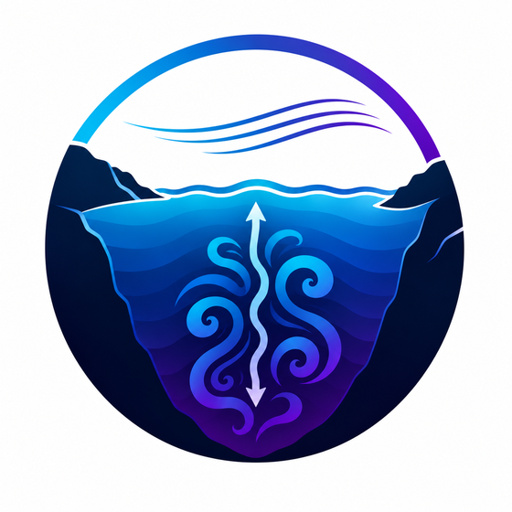

Acuicultura y sanidad
La circulación define hacia dónde viajan virus, parásitos y desechos entre centros de cultivo. Conocerla mejor ayuda a diseñar áreas de manejo sanitario.
Estudiamos cómo la marea mezcla el agua dulce y el agua de mar en los canales del Mar Interior de Chiloé, usando modelos numéricos que resuelven el movimiento vertical del océano.
Título del proyecto: Understanding Water Column Stability in a Semi-Enclosed System Using a Non-Hydrostatic Approach

La marea empuja el agua de mar (densa, azul oscuro) sobre un umbral. Detrás de él, el agua se hunde, salta y forma ondas y remolinos que mezclan las capas.
El Mar Interior de Chiloé es un sistema semicerrado donde el agua dulce de ríos, lluvia y glaciares se encuentra con el agua salada del Pacífico. Las dos aguas no se mezclan fácilmente: la más liviana queda arriba y la más densa abajo, como en un vaso con aceite y agua.
En canales estrechos y con umbrales submarinos, como el Canal Desertores, la marea empuja esas capas con fuerza. El agua densa se hunde detrás del umbral y luego "salta" de golpe, formando ondas internas y remolinos que mezclan la columna de agua. Lo que ocurre en esos pocos kilómetros controla cuánta agua, oxígeno y nutrientes se intercambian entre las cuencas del norte y del sur.
Los modelos que se usan hoy en la zona suponen que el movimiento vertical es pequeño (aproximación hidrostática). En un salto interno esa suposición puede fallar. Por eso usamos el modelo CROCO en su versión no hidrostática, con simulaciones gemelas que comparan ambos enfoques a resoluciones de hasta 25 m, para entender cómo cambian la turbulencia y la mezcla entre mareas de sicigia y de cuadratura.
El Mar Interior de Chiloé sostiene buena parte de la acuicultura de Chile y a muchas comunidades costeras. Para gestionarlo bien, hay que entender cómo se mueve y se mezcla su agua.
La circulación define hacia dónde viajan virus, parásitos y desechos entre centros de cultivo. Conocerla mejor ayuda a diseñar áreas de manejo sanitario.
Las floraciones de 2016 y la del fiordo Comau causaron grandes mortalidades de peces y mariscos. La estratificación y la mezcla influyen en cuándo y dónde aparecen.
La mezcla en los umbrales renueva el agua profunda. Si falla, pueden aparecer zonas con poco oxígeno que afectan a la vida marina.
Los canales con corrientes intensas son candidatos para energía mareomotriz. Saber cómo se comporta la turbulencia es clave para evaluarlos.
Primer artículo asociado: Artal et al. (2026), Spring–neap variability of water column mixing and internal hydraulic control in a Chilean Patagonian channel, Estuarine, Coastal and Shelf Science.
Osvaldo Artal, investigador responsable. Departamento de Ingeniería en Obras Civiles, Universidad de La Frontera, Temuco.
Contacto: osvaldo.artal@ufrontera.cl